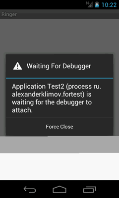

/* Моя кошка замечательно разбирается в программировании. Стоит мне объяснить проблему ей - и все становится ясно. */
John Robbins, Debugging Applications, Microsoft Press, 2000

/* Моя кошка замечательно разбирается в программировании. Стоит мне объяснить проблему ей - и все становится ясно. */
John Robbins, Debugging Applications, Microsoft Press, 2000

В Android SDK входит набор инструментов, предназначенных для отладки. Они интегрированы в Eclipse IDE. Самый важный инструмент при отладке - это LogCat (очень красивое название, которое можно перевести как Логичный Кот). Он отображает сообщения логов (журнал логов), рассылаемые при помощи различных методов.
Рассмотрим на примере. Очень часто программисту нужно вывести куда-то промежуточные результаты, чтобы понять, почему программа не работает. Особо хитрые временно размещают на экране текстовое поле и выводят туда при помощи метода editText.setText("Здесь был Васька"). Но есть способ лучше. В Android есть специальный класс android.util.Log для подобных случаев.
Класс Log позволяет разбивать сообщения по категориям в зависимости от важности. Для разбивки по категориям используются специальные методы, которые легко запомнить по первым буквам, указывающие на категорию:
В первом параметре метода используется строка, называемая тегом. Обычно принято объявлять глобальную статическую строковую переменную TAG в начале кода:
private static final String TAG = "MyApp";
Далее уже в любом месте вашей программы вы вызываете нужный метод журналирования с этим тегом:
Log.i(TAG, "Это мое сообщение для записи в журнале");
Также используется в исключениях:
try {
// ...
} catch (Exception exception) {
Log.e(TAG, "Получено исключение", exception);
}
Пользователи не видят этот журнал. Но, вы, как разработчик, можете увидеть его через программу LogCat. В Eclipse его можно открыть через Window | Show View | Other... | Android | LogCat.
В LogCat вы можете отфильтровать сообщение по этому тегу, чтобы видеть на экране только свои сообщения.
Напрямую скопировать текст из журнала в буфер обмена нельзя. Чтобы обойти это ограничение, щёлкните правой кнопкой мыши на сообщении и выберите пункт Filter similar messages.... Откроется новое окно и из него можно спокойно скопировать нужный текст.
LogCat также можно запустить его из командной строки:
adb logcat
Серьезные разработчики держат окно LogCat всегда открытым во время работы с эмулятором.
Также в SDK есть файловый менеджер (File Exptorer) для просмотра файлов в устройстве или эмуляторе. Чтобы просмотреть эти инструменты, в Eclipse нужно выбрать режим Debug. Можно также запустить каждый инструмент через меню Window→Show View→Other→Android.
Вы можете просмотреть подробные сведения о трассировке приложения Android, воспользовавшись классом android.os.Debug, в котором содержится метод для начала (Debug.startMethodTracing()) и для завершения трассировки (Debug.stopMethodTracing()).
Android создаст в устройстве (или в эмуляторе) файл трассировки. Затем вы сможете скопировать файл трассировки на рабочую станцию и просмотреть вывод трассировщика при помощи специального инструмента, имеющегося в Android SDK.
Также можно использовать отладчик Eclipse для установки точки останова, пошагово исполнять программу или просматривать ее состояние. Для этого в файле AndroidManifest.xml нужно добавить команду android:debuggable="true".
<application android:icon="@drawable/icon"
android:label="@string/app_name"
android:debuggable="true">
...
Сохраните изменения в файле, щелкните правой кнопкой мыши на проекте и выберите команду Debug As | Android Application.
Для создания конфигурации по отладке приложения выберите в Eclipse меню Run | Debug Configurations….
В открывшемся диалоговом окне Debug Configurations выберите нужный проект из левой части окна. Если в списке приложения нет, то выберите через кнопку Browse....
Поле Name в верхней части окна оставляют без изменений, чтобы оно совпадало с именем приложения, но если вы большой оригинал и любите путаться в проектах, то можете задать другое имя.
Щёлкните кнопку Debug.
Если эмулятор ещё не запущен, то он запустится, как обычно это происходит при обычном режиме Run. Единственное отличие - при запуске вашей программы появится диалоговое окно Waiting for Debugger, которое закроется через несколько секунд.

Теперь можно приступать к отладке.
У вам может автоматически открыться новая перспектива Debug. Если этого не произошло, то выберите в меню Window | Open Perspective | Debug.
Перспектива содержит несколько панелей. Например, в левой верхней части находится панель Debug, на которой можно наблюдать за потоками вашей программы.
Справа от этой панели находятся панели Variables и Breakpoints, позволяющие следить за значениями переменных и управлять точками останова.
В нижней части перспективы можно увидеть панели Console и LogCat.
Попробуем установить точку останова. Выберите нужную строчку кода и слева от её номера строки щелкните правой кнопкой мыши. Выберите пункт Toggle Breakpoint (либо сделать двойной щелчок в этой области). Если прицеливаться вам неохота, то просто установить курсор на нужной строке и нажмите комбинацию клавиш Ctrl-Shift-B.
В качестве эксперимента установите точку останова на следующей строке после setContentView(R.layout.activity_test). Например, это может быть строка:
textOut = (EditText) findViewById(R.id.textout);
Запустите отладку. Это можно сделать через значок жучка на панели инструментов, клавишу F11 или через меню, как было описано в начале данного раздела.
В эмуляторе запустится ваше приложение и затем остановится, когда дойдет до строчки кода, на которую вы поставили точку останова. Строка будет подсвечена зелёным цветом, а само текстовое поле не загрузится на экран (как и остальные элементы, которые идут после этой строки кода).
На панели Debug вы увидите различные значки для управления отладкой.
Например, чтобы перейти на следующую строку кода, нажмите на значок Step Over или нажмите клавишу F6.
Это базовое описание работы по отладке. Вам следует самостоятельно изучить эти приёмы.
Настоятельно рекомендуется удалять все вызовы LogCat в готовых приложениях. Если проект очень большой и вызовы журналирования разбросаны по всем местам кода, то ручное удаление (или комментирование) становится утомительным занятием. Многие разработчики используют следующую хитрость - создают обёртку вокруг вызова методов LogCat.
public static final boolean isDebug = false;
public final String TAG = "MyLogger";
public void MyLogger(String statement){
if (isDebug) {
Log.v(TAG, statement);
}
}
Теперь остаётся только присвоить нужное значение переменной isDebug перед созданием готового apk-файла для распространения.
Программисты, работающие в Goggle, используют похожий приём. Подробнее можно почитать здесь.
Попался в сети пример для просмотра сообщений LogCat на устройстве. С примером не разбирался, оставлю здесь на память.
Разметка
<?xml version="1.0" encoding="utf-8"?>
<LinearLayout xmlns:android="http://schemas.android.com/apk/res/android"
android:layout_width="fill_parent"
android:layout_height="fill_parent"
android:orientation="vertical" >
<ListView
android:id="@android:id/list"
android:layout_width="fill_parent"
android:layout_height="wrap_content" />
</LinearLayout>
Разметка для элемента списка:
<?xml version="1.0" encoding="utf-8"?>
<TextView xmlns:android="http://schemas.android.com/apk/res/android"
android:id="@+id/txtLogString"
android:layout_width="fill_parent"
android:layout_height="wrap_content" />
Добавляем разрешение в манифест:
<uses-permission android:name="android.permission.READ_LOGS" />
Код для класса:
package ru.alexanderklimov.test;
import java.io.BufferedReader;
import java.io.IOException;
import java.io.InputStreamReader;
import java.util.ArrayList;
import java.util.List;
import android.app.AlertDialog;
import android.app.ListActivity;
import android.content.Context;
import android.graphics.Color;
import android.os.AsyncTask;
import android.os.Bundle;
import android.view.LayoutInflater;
import android.view.View;
import android.view.ViewGroup;
import android.widget.ArrayAdapter;
import android.widget.ListView;
import android.widget.TextView;
public class TestActivity extends ListActivity {
private LogStringAdaptor adaptor = null;
private ArrayList<String> logarray = null;
private LogReaderTask logReaderTask = null;
/** Called when the activity is first created. */
@Override
public void onCreate(Bundle savedInstanceState) {
super.onCreate(savedInstanceState);
setContentView(R.layout.activity_test);
logarray = new ArrayList<String>();
adaptor = new LogStringAdaptor(this, R.id.txtLogString, logarray);
setListAdapter(adaptor);
logReaderTask = new LogReaderTask();
logReaderTask.execute();
}
@Override
protected void onDestroy() {
logReaderTask.stopTask();
super.onDestroy();
}
@Override
protected void onListItemClick(ListView l, View v, int position, long id) {
super.onListItemClick(l, v, position, id);
final AlertDialog.Builder builder = new AlertDialog.Builder(
TestActivity.this);
String text = ((String) ((TextView) v).getText());
builder.setMessage(text);
builder.show();
}
private int getLogColor(String type) {
int color = Color.BLUE;
if (type.equals("D")) {
color = Color.rgb(0, 0, 200);
} else if (type.equals("W")) {
color = Color.rgb(128, 0, 0);
} else if (type.equals("E")) {
color = Color.rgb(255, 0, 0);
;
} else if (type.equals("I")) {
color = Color.rgb(0, 128, 0);
;
}
return color;
}
private class LogStringAdaptor extends ArrayAdapter<String> {
private List<String> objects = null;
public LogStringAdaptor(Context context, int textviewid,
List<String> objects) {
super(context, textviewid, objects);
this.objects = objects;
}
@Override
public int getCount() {
return ((null != objects) ? objects.size() : 0);
}
@Override
public long getItemId(int position) {
return position;
}
@Override
public String getItem(int position) {
return ((null != objects) ? objects.get(position) : null);
}
public View getView(int position, View convertView, ViewGroup parent) {
View view = convertView;
if (null == view) {
LayoutInflater vi = (LayoutInflater) TestActivity.this
.getSystemService(Context.LAYOUT_INFLATER_SERVICE);
view = vi.inflate(R.layout.logitem, null);
}
String data = objects.get(position);
if (null != data) {
TextView textview = (TextView) view
.findViewById(R.id.txtLogString);
String type = data.substring(0, 1);
String line = data.substring(2);
textview.setText(line);
textview.setTextColor(getLogColor(type));
}
return view;
}
}
private class LogReaderTask extends AsyncTask<Void, String, Void> {
private final String[] LOGCAT_CMD = new String[] { "logcat" };
private final int BUFFER_SIZE = 1024;
private boolean isRunning = true;
private Process logprocess = null;
private BufferedReader reader = null;
private String[] line = null;
@Override
protected Void doInBackground(Void... params) {
try {
logprocess = Runtime.getRuntime().exec(LOGCAT_CMD);
} catch (IOException e) {
e.printStackTrace();
isRunning = false;
}
try {
reader = new BufferedReader(new InputStreamReader(
logprocess.getInputStream()), BUFFER_SIZE);
} catch (IllegalArgumentException e) {
e.printStackTrace();
isRunning = false;
}
line = new String[1];
try {
while (isRunning) {
line[0] = reader.readLine();
publishProgress(line);
}
} catch (IOException e) {
e.printStackTrace();
isRunning = false;
}
return null;
}
@Override
protected void onCancelled() {
super.onCancelled();
}
@Override
protected void onPreExecute() {
super.onPreExecute();
}
@Override
protected void onPostExecute(Void result) {
super.onPostExecute(result);
}
@Override
protected void onProgressUpdate(String... values) {
super.onProgressUpdate(values);
adaptor.add(values[0]);
}
public void stopTask() {
isRunning = false;
logprocess.destroy();
}
}
}

Попался ещё один пример, когда нужно тестировать приложение на устройстве в течение длительного времени. В настройках телефона можно установить два часа как максимум для включенного экрана. Поэтому нужен другой способ (нашел здесь):
package com.your.testpackage;
import android.os.PowerManager;
import android.test.ActivityInstrumentationTestCase2;
public class YourCoolTestClass extends
ActivityInstrumentationTestCase2 {
protected static String TAG = "#########" + YourCoolTestClass.class.getName();
private PowerManager mPowerManager = null;
private PowerManager.WakeLock mWakeLock = null;
public YourCoolTestClass() throws Exception{
super("com.your.application.package.root", YourCoolActivity.class);
}
public void setUp() throws Exception {
// Get power manager
mPowerManager = (PowerManager) getActivity().getApplicationContext().getSystemService(Context.POWER_SERVICE);
mWakeLock = this.mPowerManager.newWakeLock(PowerManager.SCREEN_BRIGHT_WAKE_LOCK | PowerManager.ON_AFTER_RELEASE, TAG);
// Acquire the lock
mWakeLock.acquire();
}
public void testAllBatteryLifeLong() {
// TEST
}
@Override
public void tearDown() throws Exception {
try {
// Wake lock MUST be released to avoid lock leaks
if(mWakeLock != null && !mWakeLock.isHeld) {
mWakeLock.release();
}
} catch (Throwable e) {
e.printStackTrace();
}
getActivity().finish();
super.tearDown();
}
}